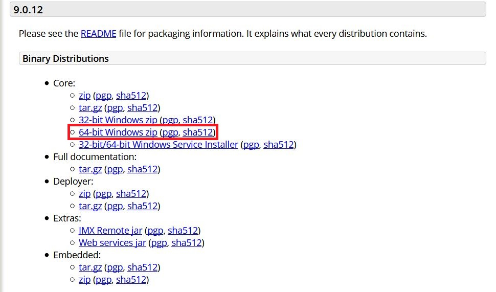
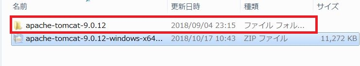
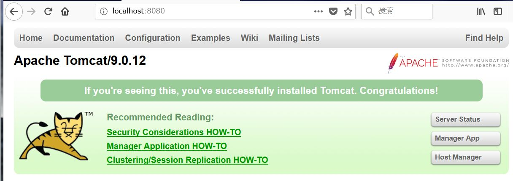
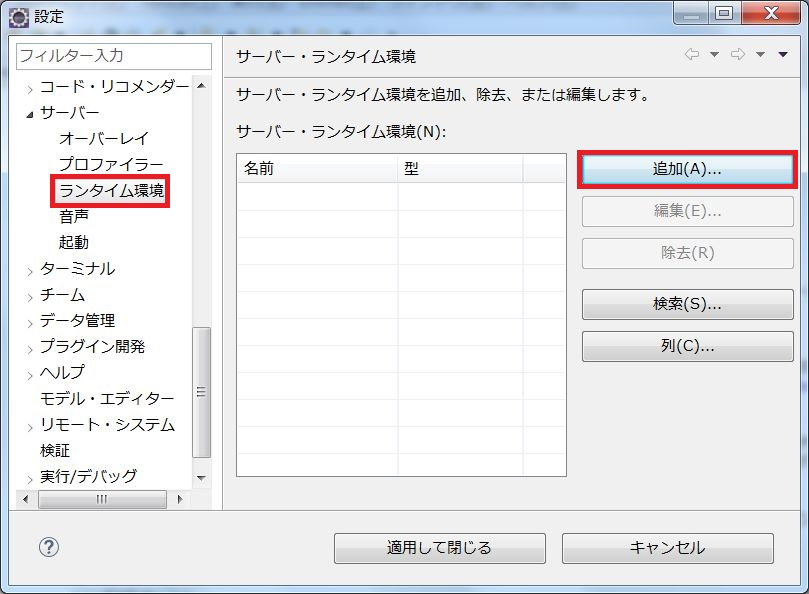
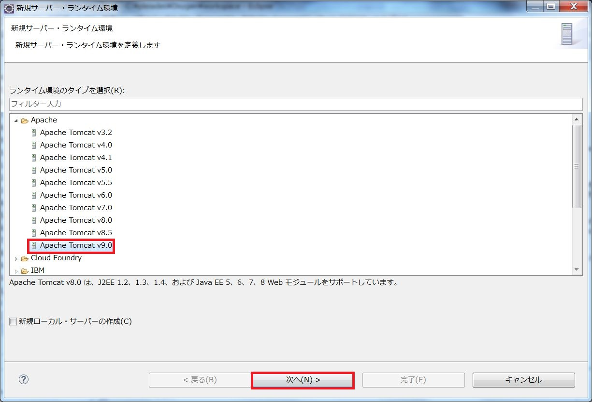
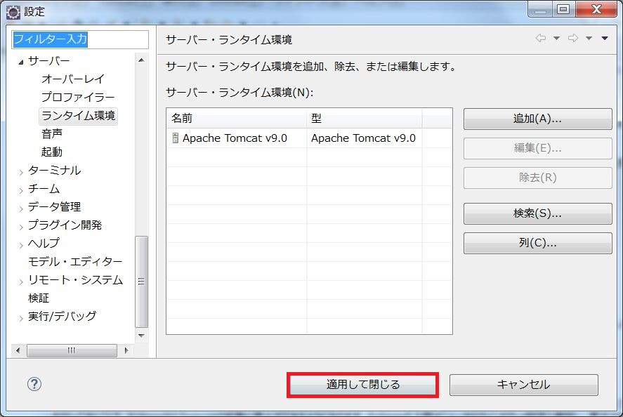

Apache Tomcat（以下、Tomcat）とはJavaでWebアプリケーションを開発・運用する際に必要となるアプリケーションサーバーの中の一つです。Java Servletの実行環境であることから「サーブレットコンテナ」とも呼ばれます。誰でも無料で利用することができます。
まずはTomcat本体を入手します。現在公式サイトから入手できるのはバージョン7、8、9のいずれかになります。今回は最新版のバージョン9を利用することにします。バージョン9はこちらから入手できます。
ここではWindows64bit版を例に解説します。32bitのWindowsをお使いの場合は「32-bit Windows zip」をダウンロードしてください。リンクをクリックするとダウンロードが開始されますので、任意の場所にダウンロードします。ダウンロードが完了したら、zipファイルができあがっていますので、「C:\Apache Tomcat」フォルダを作成し、その中に解凍してください。
解凍が完了したらコマンドプロンプトを起動し、以下の2つのコマンドを実行してください。なお、起動したコマンドプロンプトはコマンド実行後も閉じずに開いたままにしておいてください。（Tomcatを停止する時の手間を省くため）
CD C:\Apache Tomcat\apache-tomcat-9.0.12\bin
startup
Webブラウザを起動し、アドレスバーに以下のURLを入力してエンターキーを押下してください。
http://localhost:8080
以下のような画面が表示されればOKです。
Tomcatが問題なく起動できることを確認できました。Tomcatを起動した際のコマンドプロンプトで以下のコマンドを実行してTomcatを停止します。
shutdown
Tomcatのセットアップが完了しましたので、Eclipseとの連携設定を行います。先ほどはコマンドプロンプトからTomcatを起動・停止しましたが、Eclipseとの連携設定を行っておくことで、EclipseからTomcatの起動と停止ができるようになります。Eclipseの上部メニューからウィンドウ→設定と選択し、表示された画面の左側にあるメニューからサーバー→ランタイム環境を選択します。
表示された画面で追加ボタンを押下し、表示された画面でApache→Apache Tomcat v9.0を選択して次へボタンを押下します。
表示された画面のTomcatインストールディレクトリ欄に以下のパスを指定し、完了ボタンをクリックしてください。
C:\Apache Tomcat\apache-tomcat-9.0.12
以上で設定は完了です。最初の画面に戻りますので、適用して閉じるボタンをクリックして設定を反映させてください。
次回はJSPとサーブレットについて解説していきます。